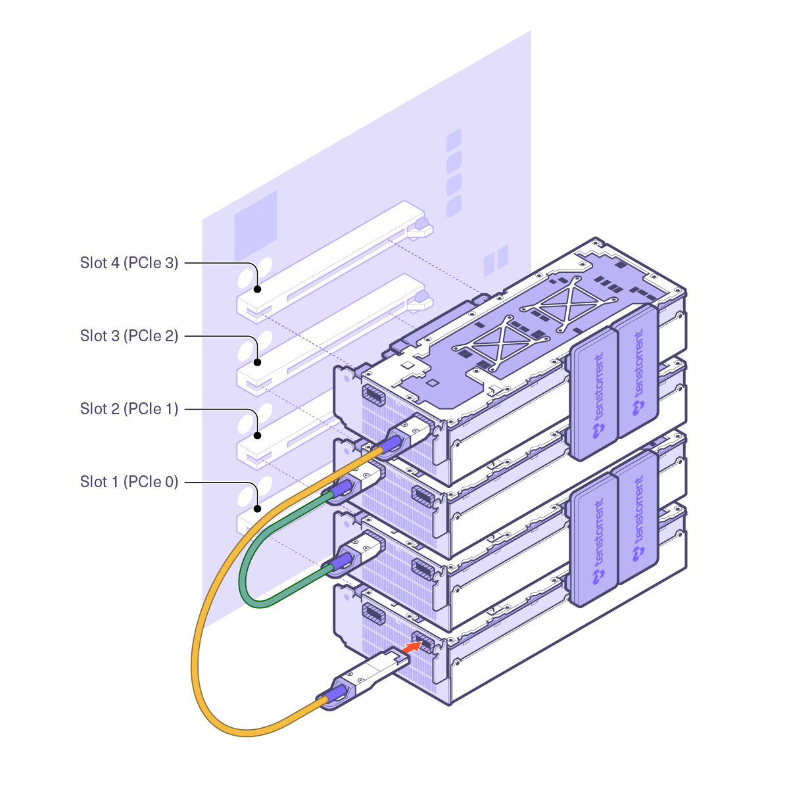

Receiving, Unboxing, and Setup
This guide provides system administrators, hardware engineers, and users responsible for the initial setup of Tenstorrent hardware with step-by-step instructions. You will learn to safely unbox a TT-QuietBox Wormhole™ workstation, connect all required hardware components, and install the recommended operating system.
Before You Begin
Before you begin, choose a clear, stable, and spacious area for the TT-QuietBox Wormhole™ workstation. The system ships in a palletized wooden crate. Ensure you have at least two people and enough room for them to maneuver comfortably and safely around the crate and system. Clear the area where you intend to use the TT-QuietBox Wormhole™ and ensure to use a dedicated circuit and outlet, as specified in the electrical safety warning linked below. Also, confirm that all vents are clear of obstructions or other objects.
Warning
The fully palletized and crated shipment weighs approximately 134 lbs (61 kg), and the workstation itself weighs approximately 80 lbs (36 kg). Unboxing and lifting require at least two people for safe maneuverability.
Do not proceed with unboxing or installation if you suspect shipping damage to the system. Contact Tenstorrent support by raising a support request. Our team will review your request and provide assistance.
Safety Warnings
Please visit the safety warnings section on the specifications page for information about electrical and electrostatic discharge (ESD) warnings.
Required Tools
For unboxing, you will need the following tools:
Phillips head screwdriver
Scissors or a similar cutting tool
For setup, you will need the following:
Keyboard
Mouse
Monitor
Step 1: Unboxing the Workstation
Follow these steps to unbox your TT-QuietBox Wormhole™ workstation:
Position the crate. Position the crate in your prepared unboxing area, ensuring ample space for two people to work around it.
Remove plastic wrap. Remove the outer plastic wrap and cut the two lifting straps looped around the crate.
Open the crate. Use a Phillips head screwdriver to remove the six screws from the top panel of the crate. Lift off the top panel.
Remove the system from the crate. Remove the protective styrofoam from inside the crate. Use the two lifting straps to vertically lift the inner cardboard box out of the wooden crate. Do not tilt the box sideways during this process.
Open the cardboard box. Cut the two lifting straps off the cardboard box and open the top flaps.
Unpack accessories. Remove the documentation and the accessory bag from the box and set them aside.
Remove the workstation from the cardboard box. Reach into the short sides of the box, secure your hands under the supportive styrofoam, and lift the TT-QuietBox Wormhole™ workstation out of the box. Place it in your workspace.
Remove additional packing material. Remove any remaining packaging from the exterior of the TT-QuietBox Wormhole™ workstation.


Inspect the system. Inspect the workstation to ensure all components are properly mounted and secured. The system ships with sufficient liquid coolant for long-term operation; adding or purchasing coolant is not necessary.
Step 2: Setting Up the Hardware
Follow these steps to set up the hardware for your TT-QuietBox Wormhole™ workstation:
Connect the power cable. Connect the provided C13 power cable to the workstation and then to a dedicated power outlet.
Connect QSFP-DD cables. The included Quad Small Form-factor Pluggable Double Density (QSFP-DD) cables and internal Warp 100 bridges enable high-speed interconnectivity between the Tenstorrent Tensix cores. Your system includes four Wormhole™ n300 Accelerators, internal Warp 100 bridges and two external QSFP-DD cables to create the processor mesh.

The TT-QuietBox ships with the Warp 100 bridges connected, but the two QSFP-DD cables will need to be connected. Connect them according to the system topology diagram below. Ensure each cable is aligned correctly and clicks into place; do not force the connections.

One QSFP-DD cable will need to be connected to Port 1 on the cards in Slots 1 and 4.
One QSFP-DD cable will need to be connected to Port 2 on the cards in Slots 3 and 2.
Connect to the network. For host system network access, connect a standard Ethernet cable (Cat 6 or better, user-provided) to an RJ45 LAN port on the rear panel. The LAN1 and LAN2 ports are 10GbE, while LAN3 and LAN4are 1GbE.
Note
The port that is not outlined in the following image is the BMC management port.
Connect peripherals. Connect your monitor, keyboard, and mouse (user-provided). A VGA-to-HDMI adapter is included for monitors that require an HDMI connection. Be sure to plug in both the VGA and USB-A connectors to the rear panel for a video signal to be transmitted.
Power on the system. Locate the main power supply switch on the rear of the workstation and set it to the ON position. Press the system power button on the front panel.
Note
The system’s initial hardware initialization during its first Power-On-Self-Test (POST) may require up to 10 minutes before displaying the BIOS screen. If after 10 minutes you do not see the BIOS screen, please raise a support request.
Step 3. Install Operating System
The TT-QuietBox system ships without an operating system installed. Tenstorrent recommends preparing a bootable USB flash drive with an installer for Ubuntu 22.04 LTS (Jammy Jellyfish) to ensure proper performance and compatibility with the Tenstorrent software stack.
Note
TT-QuietBox uses an ASRock Rack SIENAD8-2L2T motherboard; the manual for that motherboard is available here.
To install Ubuntu 22.04 LTS (Jammy Jellyfish) from a USB flash drive, first plug in the drive to an available USB Type-A port.
You can either enter the system’s BIOS/UEFI setup to adjust the boot order or enter a boot menu during Power-On-Self-Test (POST):
Option 1: Adjust Boot Order
Power on or restart the system
Press the
F2orDeletekey during Power-On-Self-Test (POST) to enter UEFINavigate to the
BootsectionSet your USB flash drive as the primary boot device
Select
Save Changes and Exit; the system will restart and should now boot from your USB flash driveFollow the on-screen Ubuntu installation prompts
Step 4: Verifying System Recognition of Wormhole n300 Accelerators
Once logged into the system, execute these commands in a terminal to download the latest list of PCI device IDs and list the recognized devices:
sudo update-pciids
lspci -d 1e52:
You should see an output which lists four recognized accelerators:
31:00.0 Processing accelerators: Tenstorrent Inc Wormhole
4b:00.0 Processing accelerators: Tenstorrent Inc Wormhole
b1:00.0 Processing accelerators: Tenstorrent Inc Wormhole
ca:00.0 Processing accelerators: Tenstorrent Inc Wormhole
Important
If you don’t see all four accelerators listed, please raise a support request. Our team will review your request and provide assistance.
Step 5: Installing the Tenstorrent Software Stack
After completing the operating system installation, proceed with Installing the Tenstorrent Software Stack.
Need Additional Support?
If you encounter any issues, or have a question that isn’t covered in the documentation, please raise a support request. Our team will review your request and provide assistance.